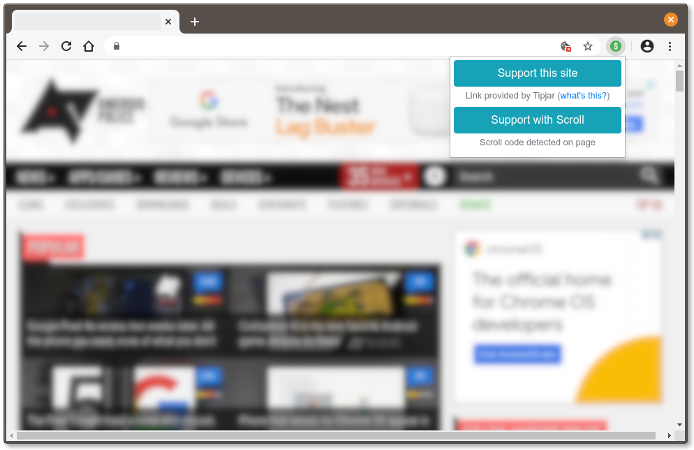

Thanks for taking part in Tipjar's mission to create a healthy internet for everyone.
When the site you have open accepts direct contributions, you'll see a green money icon in your browser's toolbar. All you have to do is click it, and you'll be sent to the appropriate page. You can see it in action on corbin.io.

Tipjar looks for code in the page's header that links to a donation/support page. If one isn't found, the extension will check its internal list of sites for an available option. Tipjar can also detect a variety of other payment options (cryptocurrency, Scroll, etc.), and will display buttons for them if available.
If you find Tipjar useful, please donate to support continued development. It would mean a lot!
If you find a bug, have a suggestion for a new feature, or know a website that supports direct donations, please create an issue on the GitHub repository or submit an issue via email.